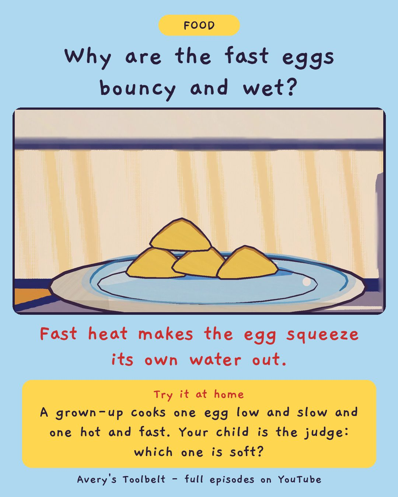

Low and SlowWhy Do Eggs Go Hard and Wet?
小火，慢慢來

Why are the fast eggs bouncy and wet?
Fast heat makes the egg squeeze its own water out.
Try it at home
A grown-up cooks one egg low and slow and one hot and fast. Your child is the judge: which one is soft?
Free printable coloring page (PDF) Watch the full episode on YouTubeAbout this episode, for grown-ups
Avery wants breakfast faster, so she wants the dial turned up. More heat, faster food - what could go wrong? Mom doesn't argue. She puts two pans on the stove, one on low and one on high, with the same eggs in both, and Avery counts out loud from her stool.
The high pan goes lumpy first - and then water runs out from under the lumps. How can eggs be hard and wet at the same time? Meanwhile Gus has been made the judge, and he keeps arriving with more equipment: a chair, a clipboard, an Official Tasting Spoon.
What children find out: cook eggs slowly and they go soft and fold. Cook them fast and the egg squeezes itself tight and pushes its own water out. Same eggs - just the dial.
For grown-ups: an episode about getting it wrong in front of everybody. Nobody is cross, and a pan of ruined eggs is the cheapest lesson in the house.